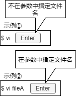
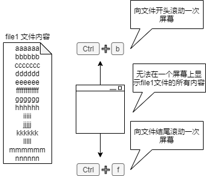
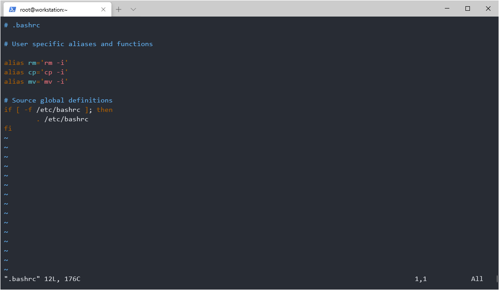
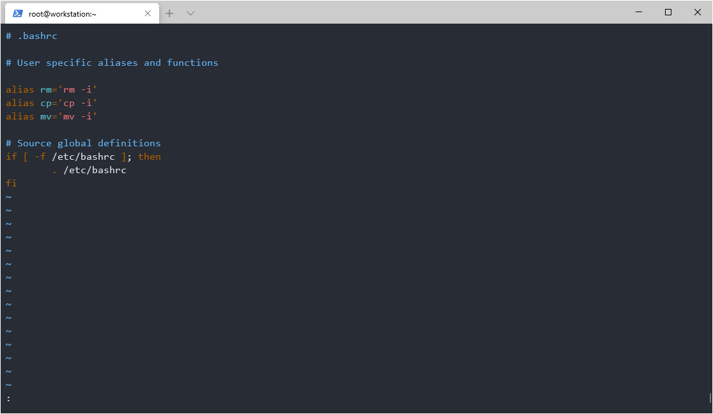
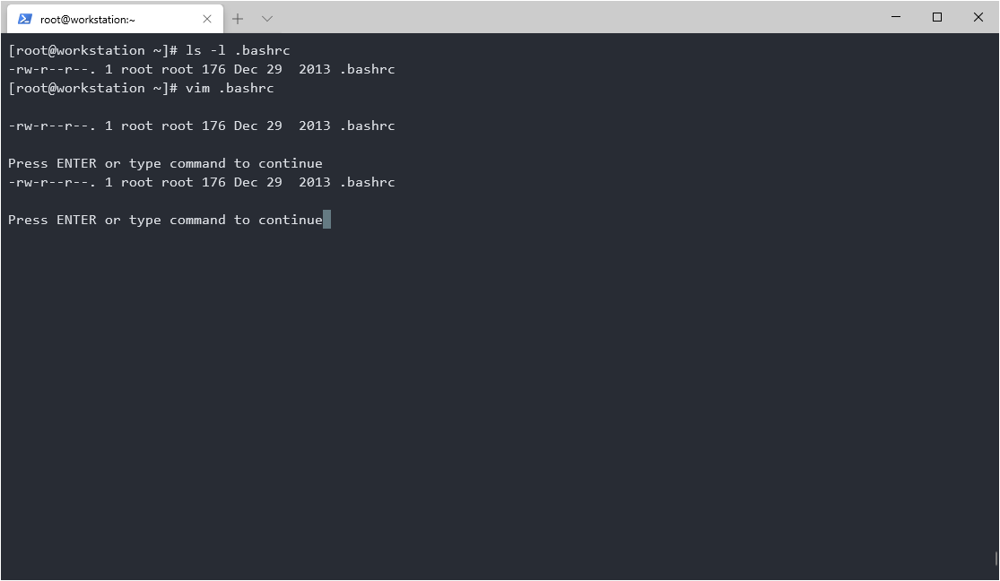
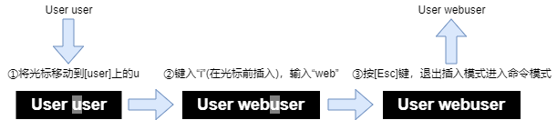
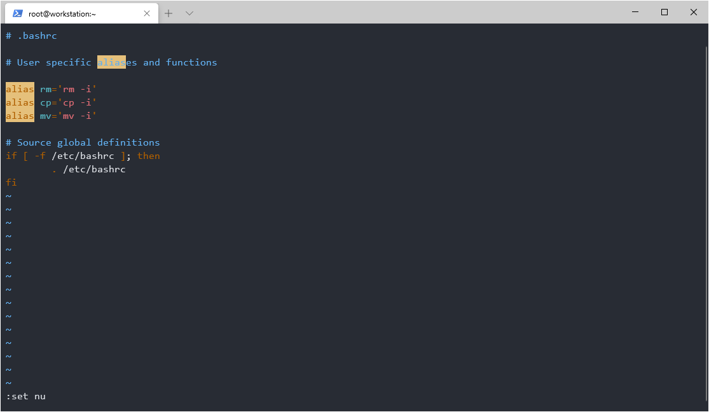
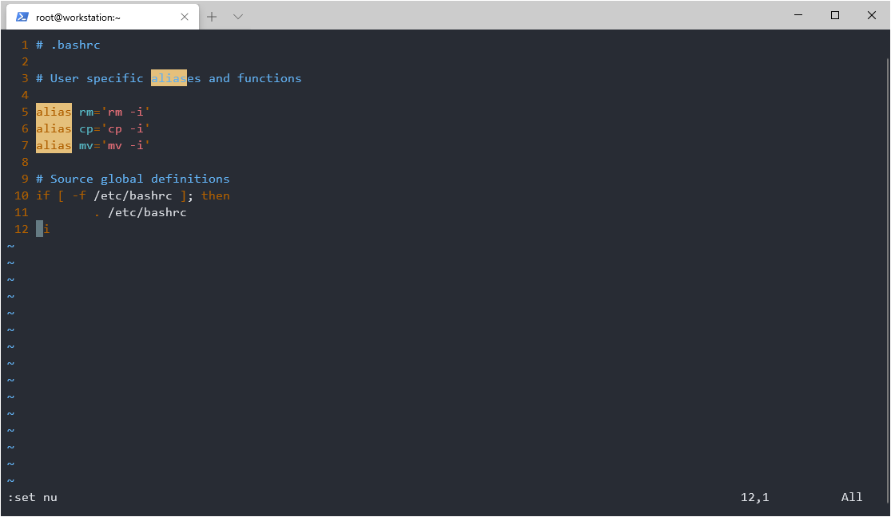

3.4 使用vi编辑其编辑文件¶
什么是vi编辑器？¶
vi是Bill Joy开发的UNIX标准文本编辑器。您可以使用vi编辑器创建和编辑文件。Linux也提供了与vi兼容的增强功能vim(Vi IMproved)。在最近的RedHat 发行版中，vi是作为vim的基础配置软件包命令或vim的alias（别名）提供的。vim提供多种有用的功能，如语法高亮和屏幕截图等。
vi编辑器启动方式如下图所示：
如果启动vi编辑器时没有指定文件名，请在编辑后使用文件名称保存新文件。此外，如果指定了文件名称，如示例②所示，将打开该文件。如果不存在具体指定名称的文件，则使用该名称创建一个新文件。
vi编辑器在三种模式之间切换：
操作方式 |
说明 |
|---|---|
命令方式 |
输入关键字时，将其视为vi命令。可以移动光标，删除，复制和黏贴文件的行。命令方式时vi的默认方式，在启动后和按下[Esc]键之后进入该模式。 |
输入模式（插入模式） |
键入键盘将字符输入到编辑的文本文件中。 |
末尾行模式 |
保存文档，退出vi编辑器，查找和替换字符串。 |
滚动屏幕（命令模式）¶
启动 vi 编辑器后立即处于命令模式。如果在vi编辑器中打开文件时无法在一个屏幕上查看到所有信息，则按[Ctrl]+[f]可将屏幕向前移动到文件末尾。此外，如果要将屏幕向前移动到文件的开头，请按[Ctrl]+[b]。
用于滚动和移动光标的主要命令包括：
命令 |
说明 |
|---|---|
h 或 ← |
将光标向左移动一个字符 |
j 或 ↓ |
将光标向下移动一个字符 |
k 或 ↑ |
将光标向上移动一个字符 |
l 或 → |
将光标向右移动一个字符 |
0(数字零) |
移动到当前行的开头。注意，“^”符号可以移至除空格之外的第一个字符 |
$ |
移动到当前行的行尾 |
G |
转到最后一行 |
1G |
转到第一行 |
nG |
转到第n行 |
[Ctrl]+[b] |
向文件开头滚动一次屏幕 |
[Ctrl]+[f] |
向文件结尾滚动一次屏幕 |
保存文档，退出vi编辑器（末尾行模式）¶
保存文档，退出vi编辑器，搜索并替换字符串。首先，介绍保存文档并退出vi编辑器。
按[Esc]键:
在末尾行中输入冒号 : ：
输入“:q!”将强制退出，不保存变更内容：
退出命令为“q”。如上图所示中为“q!”，表示不保存正在编辑的内容，直接放弃并退出。
与保存和退出文件相关的主要命令包括：
目的 |
命令 |
说明 |
|---|---|---|
保存 |
:w |
保留文件名称不变 |
:w! |
强制保存而不变更文件名称 |
|
:w 文件名称 |
重命名并保存（或另存为新文件） |
|
退出 |
:q |
退出且不保存文件 |
:q! |
强制退出且不保存文件已经更改的内容 |
|
保存并退出 |
:wq |
同时保存和退出 |
:wq! |
强制保存和退出 |
|
:wq 文件名称 |
修改后并保存（另存为）文件，然后退出 |
|
其他 |
:! ls -l 正在编辑的文件名称 |
在不退出vi的情况下运行命令 |
:e! |
放弃编辑并重新加载文件 |
上表的“其他”中的“:! ls -l 正在编辑的文件名称”可以修改“:!”后所述相应的命令与参数。运行vi编辑器时，您可以在不退出vi的情乱下运行linux命令。在本例中，我们将运行ls命令。
# ls -l .bashrc
-rw-r--r--. 1 root root 176 Dec 29 2013 .bashrc
首先，在命令行中运行ls命令，以检查“.bashrc”的权限。
然后启动 vi 编辑器。因为在 vi 运行期间需要运行“ls -l”命令，所以请从命令模式中选择“:!”后修改相应参数的值。然后可以继续键入Linux命令（本例中为“ls -l .bashrc”）并按[Enter]键。
使用文字输入模式（插入模式）¶
从命令模式输入A可切换到输入模式（插入模式），其允许您在文本中输入字符。有几个命令可以进入输入模式（插入模式），比如“A”命令从当前光标所在行的末尾开始输入。我们可以根据相对于光标位置来区分使用不同的命令。
命令 |
说明 |
|---|---|
i |
在光标前插入字符 |
a |
在光标后插入字符 |
o |
在光标行的下方创建一行新行，并从其开头开始插入 |
I |
在光标行的开头插入字符 |
A |
在光标行的末尾插入字符 |
O |
在光标行的上方创建一行新行，并从其开头开始插入 |
以下示例使用“i”命令将User user更改为User Webuser。
删除字符、单词或行（在命令模式下）¶
提供了几种用于删除字符、单词或行的命令。比如使用“dd”命令删除行，也可以使通过指定行数（例如“3dd”）从当前光标位置删除指定的行。
命令 |
说明 |
|---|---|
x |
删除光标前的一个字符 |
dw |
从光标处删除下一个单词 |
dd |
删除光标行 |
nx |
从光标右侧删除n个字符 |
D |
从光标移至行尾 |
ndd |
从光标行向下删除n行 |
dG |
从光标行删除到最后一行 |
dH |
从第一行删除到光标行 |
复制和黏贴字符、单词或行（在命令模式下）¶
提供了几种用于复制和黏贴字符、单词和行的命令。比如使用“yy”可以逐行复制，也可以通过指定行数（例如“3yy”）从当前光标位置复制指定行内容。还可以使用“p”命令进行黏贴，这会将其黏贴到光标行下方的行中。
命令 |
说明 |
|---|---|
yl |
复制单个字符 |
yw |
复制单词 |
yy |
复制光标行 |
nyy |
从光标行复制n行 |
y0 |
从行首复制到光标之前 |
y$ |
从光标位置复制到行尾 |
P（大写） |
如果要复制行，则黏贴到光标行上方的行中；如果要复制字符、单词则黏贴到光标的左侧 |
p（小写） |
如果要复制行，则黏贴到光标行下方的行中；如果要复制字符、单词则黏贴到光标的右侧 |
vi编辑器的设定¶
vi编辑器提供了一些启动时未启用的可用可选功能。您可以设置可选功能或更改默认设置。使用“:set”命令更改可选功能。下面的示例为显示行号：
 选项 |
说明 |
|---|---|
:set 选项 |
设置可选功能 |
:set no选项 |
取消激活可选功能 |
选项 |
说明 |
|---|---|
number |
显示行号 |
ignorecase |
不区分大小写 |
list |
显示通常不可见的字符符号，如制表符和行尾符号 |
all |
显示所有选项 |
如果在启动vi编辑器时使用上述选项，则此设置为临时设置。要确保vi编辑器启动时的设置始终相同，请在当前用户的主目录下创建配置文件“.vimrc”并写入配置信息。
以下示例假定renkeju用户的起始目录还没有“.vimrc”，创建配置文件后并配置了显示行号的设置。
$ vi file1
...下面为文件内容...
My name is Keju.
How are you? ⬅ 没有显示行号
...使用“:qw”保存并退出...
$ vi .vimrc ⬅ 创建并编辑“.vimrc”
...下面为文件内容...
set num
...使用“:qw”保存并退出...
$ vi file1
...下面为文件内容...
1 My name is Keju.
2 How are you? ⬅ 显示行号
...使用“:qw”保存并退出...